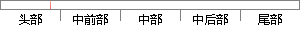

随访资料是指对一批研究对象进行追踪观察所获得的有关其结局以及出现这种结局所经历的时间等方面的资料。
片段位置图

相似结果|
相似片段 1：或观察预防保健措施的效果等，常需对研究对象进行追踪观察，以获得必要的数据，这类资料都属于随访资料。随访资料是指对一批研究对象进行追踪观察所获得的有关其结局以及出现这种结局所经历的时间等方面的资料。由于
相似片段 2：随访资料是对一批研究对象进行追踪观察所获得的有关其结局以及出现这种结局所经历的时间等方面的资料。随访资料常因失访等原因造成某些数据不完全，需要用专门的方法进行统计处理，即生存分析的方法。生存分析所需
|
※ 片段修改建议 ※
近似词参考：- 研究：钻研
- 对象：工具
- 进行：举行
- 获得：取得 得到 获取
- 结局：终局 了局
- 以及：和
- 出现：呈现 泛起 涌现
- 这种：这类
- 结局：终局 了局
- 经历：履历 阅历
- 时间：时候
系统自动生成语句：随访资料是指对一批钻研工具举行追踪观察所取得的有关其终局和呈现这类终局所履历的时候等方面的资料。
注：本片段修改建议为系统自动生成，仅供参考。